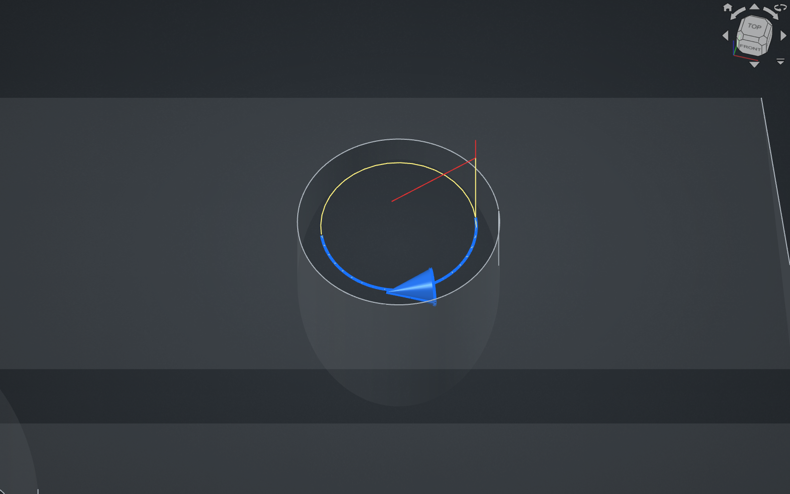
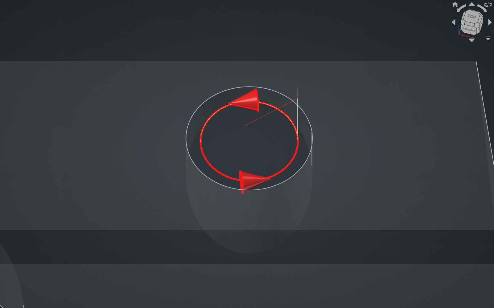
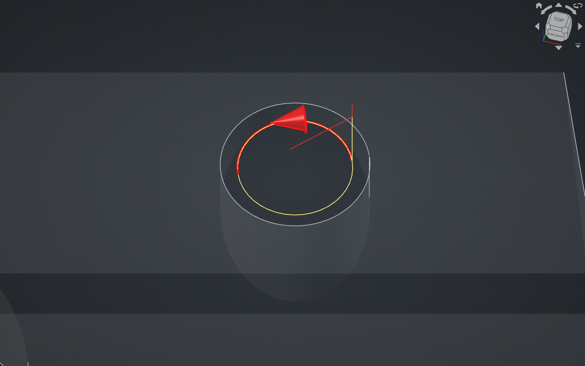
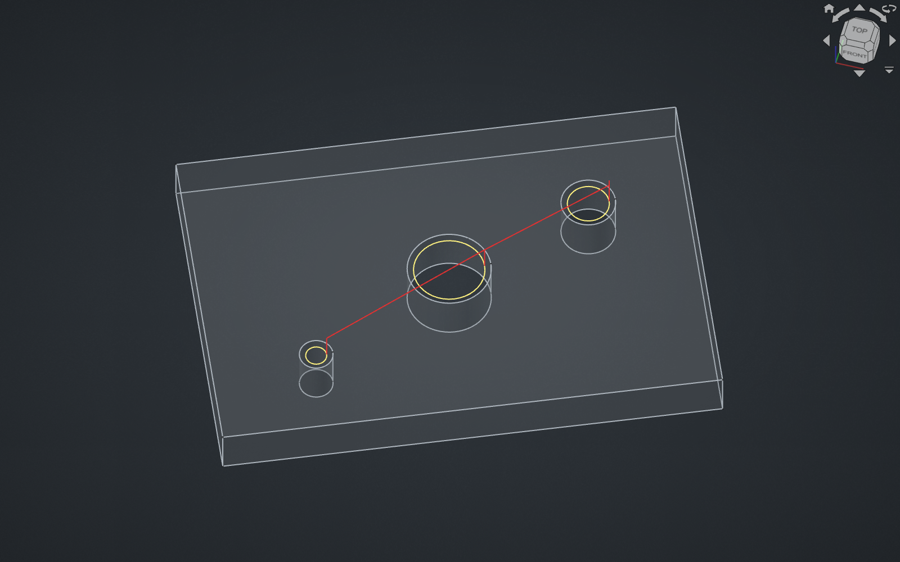
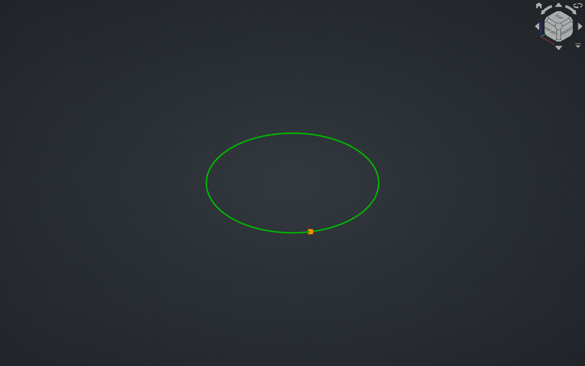
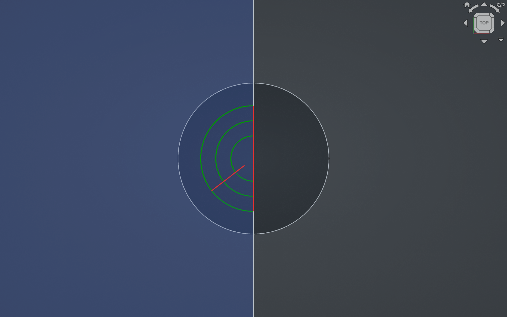
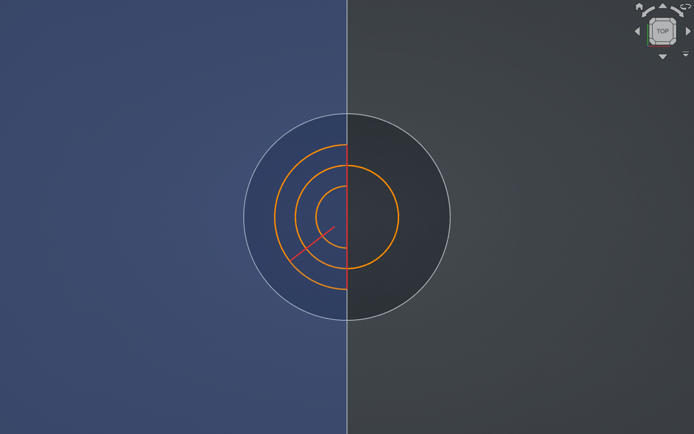

I think it's updated since your last review, please look again, check for the problem you found before, check a lot of edge cases in general. Including the effects of save/load rounding, I guess, and small arcs, and nearly complete circles, and actually complete circles. I'm surprised half circles are an edge case, but i guess it makes sense given the strategy to split at half circle if it's more than a half circle, so look at the code for where splits happen and test edge cases around that valu
CAM unit tests with the PR applied: Ran 2223 tests · OK (skipped=11, expected failures=4)




G2 moves with no center (I/J) when it clips a helix ramp. Main does.isStrictlyGreater(sweep, π) (1e-6 rad tolerance) instead of > π.Boundary.py: after clipping, the last command is renamed only when the original move was a rapid.arcToHelix() is rewritten to build the helix directly instead of going through cmdsForEdge()[0] and edgeForCmd().edgeForCmd() (isRoughly(d, 0), 1e-6 absolute) and the full-circle check (pointsCoincide, 1e-6) are unchanged.Status of the earlier findings:
arcToHelix() returning only half of an arc over 180°: fixed. splitEdgeAt() on 90°, 180°, 270° and 300° helixes now gives the same pieces as main (for example 18.888 + 28.332 mm for a 47.219 mm helix).edgeForCmd() treats an arc as a half circle when d = A×B is within 1e-6. d grows with R², and paths are saved as G-code with 6 decimals, so a real half circle in a reopened file has |d| around R·1e-6. For any radius over about 1 mm that misses the 1e-6 check. The arc then goes to the general branch, where A+B is just rounding noise and G2/G3 is ignored. When the noise points the wrong way, the arc is rebuilt as the other half, running the other way. Main's 0.005 limit catches these.
The PR makes this more likely, not less. cmdsForEdge() now writes every full circle (Engrave, Deburr, Boundary/Boundary2/Tags output) as two exact half circles. Circles whose seam lies on the X axis round cleanly. Rotated ones do not.
Repro (in the GUI):
G2 I-4.602551 J-1.953695 X82.091897 Y66.155611 followed by the matching second half: clockwise. On this PR the Boundary2 output for that hole is two G3 moves, so the chamfer is cut counter-clockwise (conventional instead of climb). Nothing was clipped.Path/Geom.py loaded in the same session and the same stored commands, Boundary2 writes hole 3 as G2, unchanged.The direct cause: edgeForCmd() on the stored first half (start X91.297 Y70.063) returns an arc whose middle is at (84.74, 72.71), the far side of the hole. Main returns (88.65, 63.51), the near side.
How often this happens, measured:
| test (6-decimal round trip, main vs PR) | main | PR |
|---|---|---|
| hand-written semicircles, 144 per radius, R 3 / 10 / 50 / 200 mm | 0 / 0 / 0 / 0 wrong | 8 / 8 / 8 / 24 wrong |
| same with 4-decimal coordinates (imported G-code) | 0 / 0 / 4 / 68 | 72 / 80 / 44 / 80 |
| rotated plate, Engrave: half circles misread | (writes full circles, 0) | 2 of 6 |
| rotated plate, Deburr | (writes full circles, 0) | 2 of 6 |
| rotated plate, Helix (its own half circles, same output on both) | 0 of 48 | 2 of 48 |
Misreads always come in pairs (both halves of one circle), so an unclipped circle comes out reversed. A clipped one keeps the wrong piece. The earlier review showed a Boundary dressup keeping a 307° arc outside its boundary this way.
The same check also misfires just above the split threshold, with no rounding at all. An arc of π+5e-7 rad (R 5 or 50 mm), or π+1e-8 rad at R 50, is not split by isStrictlyGreater and is read back on the wrong side. Main reads both correctly.
A fix that keeps #33146 fixed: test the normalized cross product (d / (|A|·|B|), i.e. a small angle) instead of an absolute 1e-6, or pick the midpoint side from G2/G3 together with the sign of d.
Screenshots: setup_deburr_rotated_plate.png, main_reads_half_circle.png, pr_reads_half_circle.png, pr_boundary2_hole3_reversed.png. Video: demo.mp4.
arcToHelix() raises on a flat arc (Path/Geom.py:645). With z0 == z1, Part.makeHelix throws "Pitch of helix too small". The old code returned a flat arc. Its only caller, splitEdgeAt() from the Tags dressup, splits only at points away from the start, so no operation reached it. A direct call fails for every sweep I tried.All of these come from one A/B probe, main vs PR. Arcs are built by cmdsForEdge() or written by hand, then read back with edgeForCmd(), exact and rounded to 6 decimals. "Correct" means right length and the midpoint lies on the original arc.
cmdsForEdge (2π − 1e-8 up to 2π − 1e-3): main reads 2π − 0.001 as a 0.01 mm arc (it loses 31.4 mm at R 5, 314 mm at R 50). The PR splits them and reads every case correctly. Fixed.cmdsForEdge now writes two half circles. These read back correctly when the seam is on the X axis (all 72 test circles). They fail with rotated seams after a save (the defect above). A main-saved single-command full circle opened on the PR still reads as a full circle.flip=True arcs of 200°, 270° and 359°: main reads them short (6.98 to 62.5 mm missing). The PR reads them correctly. Fixed.arcToHelix: 30° to 360°, CW and CCW, rising and falling: start, end and middle all match main to 0.0001 mm. Flat arcs raise (above).cmdsForEdge now emit full circles and arcs over 180° as two G2/G3 moves (tested: rotated-plate Deburr and Engrave, 3 to 6 arcs each).G2/G3 with no I/J (tested: Helix plus Boundary, main writes 12 bare G2 X Y Z moves, which its own reader cannot even rebuild; the PR writes none).arcToHelix() is rewritten (tested, matches main except for flat arcs).No properties, enum options, panel widgets, defaults or file formats change.
None of these models has a full circle or an arc over 180° written by cmdsForEdge, so the split does not show up in them.
Full CAM suite: 2223 tests, OK (11 skipped, 4 expected failures). test20 adds the issue's arc and checks its length. test41 now expects two moves for a full circle. No test covers half circles with rounded coordinates, arcs just over π, or arcToHelix on a flat arc.
cmdsForEdge is still read the short way around (G3 X0 Y-10 I-10 J0 from (10, 0) reads as 15.7 mm instead of 47.1 mm). The general branch in edgeForCmd() ignores G2/G3 on both main and the PR. The split only protects arcs that FreeCAD writes itself.CAM unit tests with the PR applied: Ran 2137 tests · OK (skipped=11, expected failures=4)



src/Mod/CAM/Path/Geom.py, plus tests in TestPathGeom.py:
edgeForCmd(): the "is this a half circle?" test isRoughly(d, 0, 0.005) becomes isRoughly(d, 0) (1e-6). The "start == end, so full circle" test drops its 0.001 tolerance and uses the 1e-6 default.cmdsForEdge(): every circle edge whose parameter range is over π is split at its middle into two edges, so full circles and arcs over 180° become two G2/G3 commands.d in edgeForCmd() is an unnormalized cross product (it scales with R²). Paths are saved as G-code with 6 decimals, so for a real half circle d lands around R·1e-6, which is above the new absolute 1e-6 limit for any radius over about 1 mm. The arc then goes to the general branch, where the midpoint direction A+B is a near-zero vector made of rounding noise, and G2/G3 is ignored. About a third of such half circles are rebuilt on the wrong side of the circle, so they run the other way. Main's 0.005 limit caught these.
Repro (Path/Geom.py:490):
G2 I3.961172 J3.051085 X37.345679 Y33.765433, a 128° arc inside the boundary.
PR: G2 I3.961172 J3.051085 X37.345679 Y23.765433, a 307° clockwise arc through the right half of the hole, outside the boundary. Only the middle ring changes. Its stored d is 3.96e-6; the other two rings round to d ≈ 1e-14.The Helix generator writes this middle ring itself, with the same output on main and the PR, so the regression comes only from the tolerance change. The PR's own cmdsForEdge() split also adds many more half circles (every engraved circle becomes two), and each of them is exposed the same way after a save.
Synthetic check of the same thing (semicircles at 72 start angles, G2 and G3, center at a non-round position, coordinates written with 6 decimals, read back with edgeForCmd):
| radius | main wrong-way | PR wrong-way |
|---|---|---|
| 0.5 mm | 0 / 144 | 0 / 144 |
| 3 mm | 0 / 144 | 30 / 144 |
| 10 mm | 0 / 144 | 44 / 144 |
| 50 mm | 0 / 144 | 50 / 144 |
| 200 mm | 0 / 144 | 48 / 144 |
edgeForCmd() is used by the Boundary, Boundary2, Tags, Plunge Milling and Z-Correct dressups, the old simulator, Lead In/Out, the dxf/svg posts and Post/Utils.py. All of them read the stored base path when only the dressup is recomputed after a file is opened.
A fix that keeps the issue fixed: normalize the test (d / (|A|·|B|) against a small angle), or decide the side from the command direction (G2/G3) together with the sign of d, instead of a fixed absolute limit.
Screenshots: main_boundary_reopened.png, pr_boundary_reopened.png; video demo.mp4, steps 2-5.
arcToHelix() keeps only the first half of arcs over 180° (Path/Geom.py:642). It takes cmdsForEdge(edge)[0], which is now half the arc. Called directly, a 270° arc gives a helix ending at (-7.07, 7.07) instead of (0, -10). splitEdgeAt() on a 300° helix (the Tags dressup path) returns pieces 26.5 mm long instead of 52.5 mm. I did not find an operation that sends a helix over 180° through Tags splitting, so this is not shown in a toolpath.edgeForCmd() no longer treats an arc whose end is within 0.001 mm of its start as a full circle (tested: an end 1e-4 mm off still reads as a 31.416 mm circle on both, so no visible change).No properties, enum options, task panel widgets, defaults or file formats change.
None referenced.
G2 I-2.013849 J1.305531 X-195.122314 Y57.492542 from (-195.121182, 57.494287), reads as a 15.08 mm full loop on main (the extra loop) and as a 0.0021 mm arc on the PR (issue33146_arc_main_vs_pr.png). The issue's own attachment could not be downloaded in this run, so its full Boundary2 job was not replayed.I ran cam_ab with every CAM object recomputed and every G2/G3 rebuilt by edgeForCmd, both fresh and after a 6-decimal round trip, checking length and direction:
cmdsForEdge, and their half circles happen to round cleanly.The full CAM suite passes: 2137 tests, OK (11 skipped, 4 expected failures). test20 gains the issue's arc and checks its length, so it does test the claim. test41 now expects two commands for a full circle. No test covers half circles with rounded coordinates or arcToHelix on arcs over 180°.
Part.OCCError: BRep_API: command not done in wiresForPath. This happens on main and the PR alike.Path.Path(<G-code text with "; type:'linking'" annotations>) hung the GUI twice; building the path from Path.Command lines with the annotations stripped worked. I did not check this further; it has nothing to do with this PR.